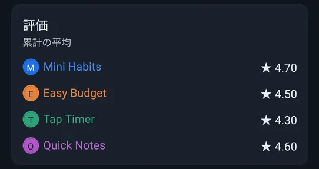
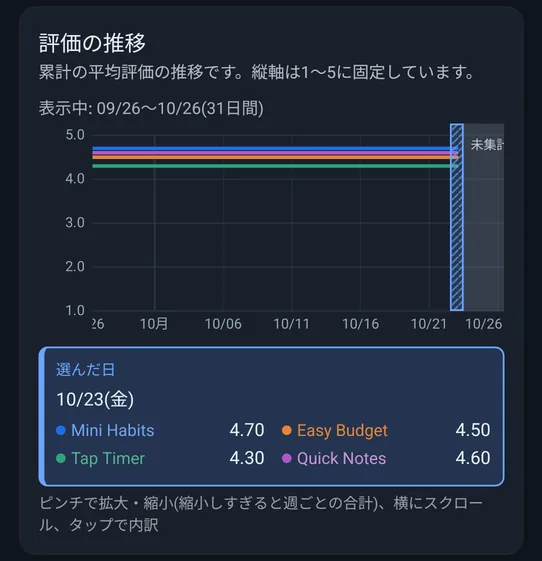
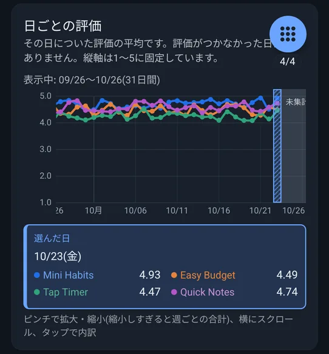
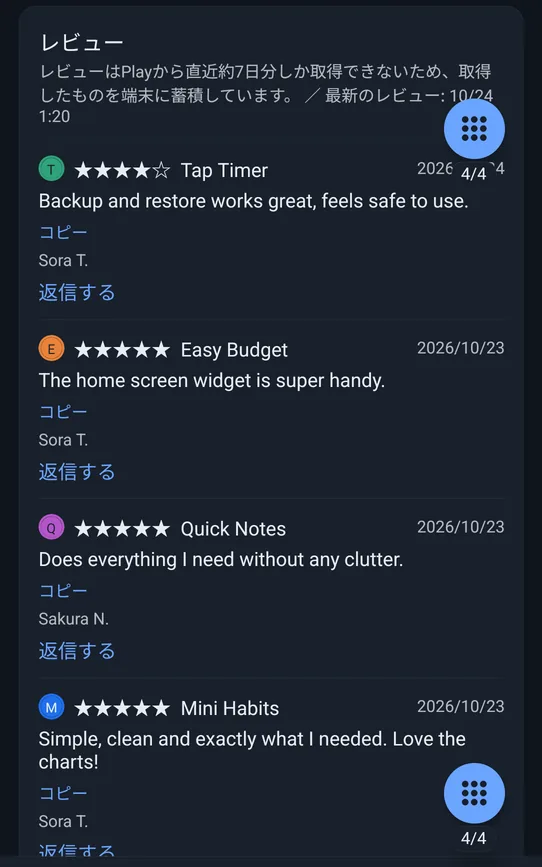

📖 はじめに（この画面でできること）
「評価」タブは、Google Playの評価とレビューをまとめて確認し、レビューに返信するための画面です。海外のレビューも、アプリの表示言語に翻訳して読めます。返信は、自分の言語で書いて、相手の言語に翻訳して送れます。
Play Consoleのアカウントでのログインが必要です。返信はPREMIUMの機能です。
🛠️ 詳しい使い方
評価の平均と推移
「評価」のカードに、アプリごとの累計の平均が並びます。
「評価の推移」は、累計の平均評価の推移の折れ線グラフ、「日ごとの評価」は、その日についた評価の平均の折れ線グラフです（評価がつかなかった日は、点がありません）。どちらも縦軸は、1〜5に固定されています。



レビューを読む・翻訳する・コピーする
Google Playのレビューを一覧で読めます。
- Playから取得できるレビューは直近約7日分だけのため、取得のたびに端末に蓄積します（アプリごとに最大500件）。「保存したデータを消して取り直す」でも、レビューは消えません。
- 外国語のレビューは、アプリの表示言語に翻訳して表示されます。レビューの下の「原文を表示」／「翻訳を表示」で、原文と翻訳を切り替えられます。
- 「コピー」を押すと、レビューの文章をコピーできます。

新着・更新レビューの印とお知らせ
取得したレビューを、すでに保存してあるものと比べて、新しく届いたものに「NEW」、星や本文が変わったものに「更新」の印を付けます。
- 更新されたレビューでは、「星が変わりました」の表示（例: ★2 → ★4）と、「変更前の内容を見る」で、変更前の星・本文を確認できます。
- 「評価」タブのアイコンには、印の付いたレビューの数が赤い数字で出ます。
- 「確認済みにする」を押すと、表示中のアプリの印がすべて消えます。
- データの取得が終わったとき、新着・更新があると、「新しいレビューが◯件あります」というお知らせがポップアップで出ます（この端末ではじめて取得したときは出ません）。設定の「新着・更新レビューのお知らせ」で、オン・オフを切り替えられます。
レビューに返信する（PREMIUM）
レビューの「返信する」を押すと、カードの中に入力欄が開きます。返信は、PREMIUMの機能です（無料のときは、ボタンに南京錠が付き、押すとPREMIUMの画面が開きます）。
- 自分の言語（アプリの表示言語）で、返信を書きます（350文字まで）。
- 「翻訳してプレビュー」を押すと、レビューした人の言語に翻訳されます。入力欄は翻訳後の文に切り替わり、直せます。その下に、書いた文と、翻訳後の文を自分の言語に戻した確認用の文が表示されます。
- 翻訳後の文が350文字を超えたときは警告が出て、送れません。短くしてください。
- 「送信」を押すと、送る内容の確認ダイアログが出ます。「送信する」で確定です。
- レビューした人の言語が、自分の言語と同じときは、翻訳せずに送ります。
- 相手の言語に翻訳できないとき（対応していない言語・言語データを取得できないとき）は、「相手の言語に訳せないが、このまま送る」で、書いた文のまま送れます。
- 「元の文を書き直す」で、書いた文の入力に戻れます（翻訳後に直した内容は消えます）。
- 翻訳には、端末内で動く翻訳機能を使います。はじめて使う言語は、言語データのダウンロード（1言語あたり数十MB）が必要で、その間は「ダウンロード中」が表示されます。
送った返信を見る・編集する
返信済みのレビューには、「あなたの返信」の枠が出ます。
- 「翻訳を表示」で、返信を自分の言語に訳して読めます（翻訳は保存されません）。
- 「返信を編集」を押すと、いまの返信が自分の言語に訳されて入力欄に入ります。直して、もう一度翻訳して送れます。
❓ よくある質問（FAQ）
Q 返信するには、何が必要ですか？
PREMIUMへの登録と、そのアプリに返信する権限のあるPlay Consoleのアカウントでのログインが必要です。権限が無いときは、「返信する権限がありません」と案内が出ます。
Q 過去のレビューが、全部は出てきません。
Playから取得できるのは、直近約7日分だけです。アプリは、取得したレビューを端末に蓄積していくので、使いはじめる前の古いレビューは表示できません。
Q レビューの翻訳が表示されません。
レビューは、アプリの表示言語に翻訳して表示します。原文のままのときは、「翻訳を表示」「原文を表示」で切り替えられます。翻訳は、通信状態や、言語データの有無に影響されることがあります。
Q 新着のお知らせが出ないようにできますか？
設定の「新着・更新レビューのお知らせ」をオフにしてください。印（NEW・更新）や、タブのアイコンの数字は、そのまま表示されます。